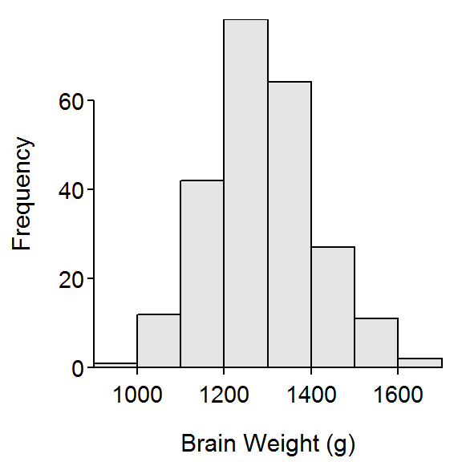
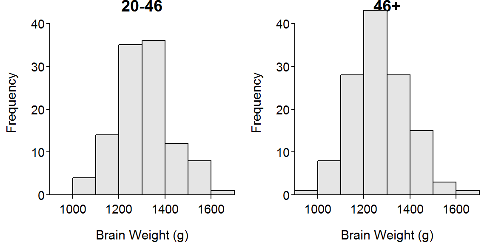
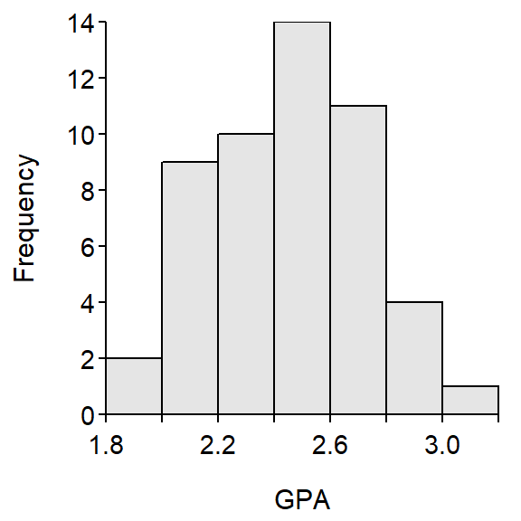
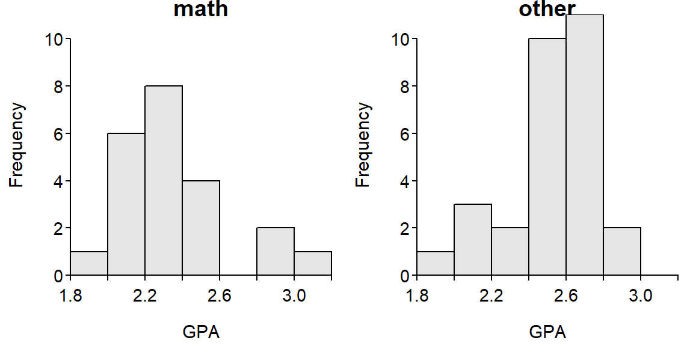

> sdCalc(c(18,28,25,21,16,24))Demonstration of parts of a std. dev. calculation.
x diffs diffs.sq
1 18 -4 16
2 28 6 36
3 25 3 9
4 21 -1 1
5 16 -6 36
6 24 2 4
sum 132 0 102
Mean = x-bar = 132 / 6 = 22
Variance = s^2 = 102 / 5 = 20.4
Std. Dev = s = sqrt(20.4) = 4.516636> iqrCalc(c(4,54,16,85,52,29,24,71,61,60,2))Median (=52) is the value in position 6.
2 4 16 24 29 [52] 54 60 61 71 85
Q1 (=16) is the value in position 3 of the lower half.
2 4 [16] 24 29
Q3 (=61) is the value in position 3 of the upper half.
54 60 [61] 71 85
**Note that the median (=52) is NOT in both halves.> iqrCalc(c(93,81,34,5,54,84,54,13,1,35,79,63,97,71))Median (=58.5) is the average of values in positions 7 and 8.
1 5 13 34 35 54 [54 63] 71 79 81 84 93 97
Q1 (=34) is the value in position 4 of the lower half.
1 5 13 [34] 35 54 54
Q3 (=81) is the value in position 4 of the upper half.
63 71 79 [81] 84 93 97
Figure 1: Histogram of brain weight (g).
Table 1: Summary statistics for brain weight (g).
n mean sd min Q1 median Q3 max
237.0 1282.9 120.3 955.0 1207.0 1280.0 1350.0 1635.0 
Figure 2: Histograms of brain weight (g) separated by age group.
Table 2: Summary statistics for brain weight (g) separated by age group.
age.group n mean sd min Q1 median Q3 max
1 20-46 110 1304.7 116.4 1027 1227.5 1301 1370.8 1635
2 46+ 127 1263.9 120.9 955 1180.0 1250 1332.5 1620R Appendix.
d <- read.csv("data/BrainHead.csv")
hist(~brain.weight,data=d,xlab="Brain Weight (g)")
Summarize(~brain.weight,data=d,digits=1)
hist(brain.weight~age.group,data=d,xlab="Brain Weight (g)")
Summarize(brain.weight~age.group,data=d,digits=1)
Figure 3: Histogram of gpa in all classes.
Table 3: Summary statistics for gpa in all classes.
n mean sd min Q1 median Q3 max
51.0 2.4 0.3 1.9 2.2 2.5 2.6 3.0 
Figure 4: Histograms of gpa separated by class type.
Table 4: Summary statistics for gpa separated by class type.
class.type n mean sd min Q1 median Q3 max
1 math 22 2.4 0.3 1.9 2.2 2.3 2.4 3
2 other 29 2.5 0.2 2.0 2.4 2.5 2.6 3R Appendix.
d2 <- read.csv("data/UNCGrades.csv")
hist(~gpa,data=d2,xlab="GPA")
Summarize(~gpa,data=d2,digits=1)
hist(gpa~class.type,data=d2,xlab="GPA")
Summarize(gpa~class.type,data=d2,digits=1)sdCalc() to verify your answer.sdCalc() to verify your answer.iqrCalc() to verify your answer. However, note that, with this \(n\), the median is the average of the two numbers in the middle positions (i.e., 7th and 8th positions) and Q1 and Q3 will be the value in the middle position (4th) of the first (positions 1-7) and second halves (positions 8-14) of the data, respectively.iqrCalc() to verify your answer. However, note that, with this \(n\), the median is the average of the two numbers in the middle positions (i.e., 8th and 8th positions) and Q1 and Q3 will be the average of the values in the middle positions (4th and 5th) of the first (positions 1-8) and second halves (positions 9-16) of the data, respectively. Compare this to your calculations on the previous question.